MahJong Rules
MahJong Rules
Copyright © 1996
Thomas Zuwei Feng
This document describes MahJong rules and their incarnation on the
Internet MahJong Server (IMS).
MahJong Tiles
There are a total of 144 tiles in MahJong, they can be classified into the
following categories:
The Character Suit

 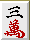
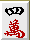
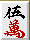
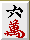
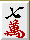
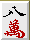
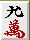
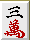
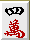
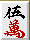
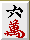
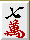
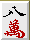
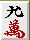
The Ball Suit
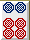
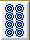

The Bamboo (or Stick) Suit
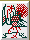
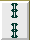
 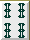
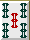
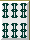
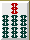
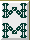
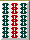
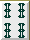
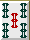
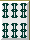
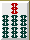
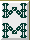
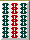
From left to right, the tiles have values 1 to 9.
There are 4 tiles for each value.
The Winds and Dragons (collectively called Words)
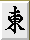
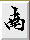
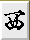
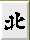
The first 4 are wind tiles that correspond to the 4 directions:
East, South, West,
and North. There are 4 for each of these tiles.
This is also the order players' seats are named on the MahJong table:
starting from the dealer being East,
rotating counterclockwise up to North.
The last 3 are dragon tiles, again there are 4 of each.
The Flowers
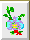
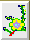
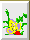
 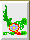
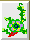
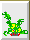
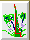
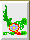
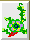
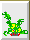
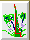
All the flower tiles are distinct. They are not normal tiles and
play relatively minor roles in MahJong, mostly to introduce the factor
of "luck".
Some versions don't even use them, but we do.
Sets of Tiles
Here are some terminologies for certain sets of MahJong tiles.
Various people have various different names for them so beware.
- A pair is a set of 2 identical tiles.
For example:
or
.
- A connection is a set of 3 tiles of the same suit,
in consecutive values.
For example:
or
.
Note that you cannot form a connection with word tiles.
- A triplet is a set of 3 identical tiles.
For example:
or
.
- A quadruplet is a set of 4 identical tiles.
For example:
.
A [normal] winning pattern consists of 5 sets of normal tiles.
One of the sets must be a pair, the other 4 sets can be
connections, triplets, or quadruplets.
You can also have any number (including 0) of flower tiles.
Here is an example:
Games and Rounds
There are 4 players on the table. A random player is chosen to be the
dealer. Each player then gets assigned a seat wind, starting
from the dealer being East, proceeding counterclockwise in
the order of the wind tiles.
There is also a round wind for each game, for the very first game
it's always East.
If the dealer wins the game or if the game is a draw,
then he remains the dealer for the next game.
However, if someone other than the dealer wins the game,
then the next player in turn (who used to be South) will
be the dealer for the next game.
When the dealer has rotated a full round back to the very first one,
the round wind rotates to the next one in the
wind tiles.
A MahJong Game
In a MahJong game, each player conceals his private hand of tiles and
reveals some of them as the game progresses.
Once some tiles are revealed, the player can no longer touch them.
There is also a big stockpile of concealed tiles to be drawn from.
To draw a tile, a player takes a tile from the stockpile on the table.
If it is a flower, he reveals it and keeps drawing until he gets a
normal tile.
NB: in normal games, players draw tiles from the beginning or the
end of the stockpile depending on the situation. We don't make that
distinction in IMS.
Initially, each player draws 13 tiles. The dealer draws a 14th one,
and the game starts, the dealer having the turn.
The player in turn has the following options:
- Discard a tile.
To do this in IMS, click on that tile, and press [Discard].
- Form a quadruplet
if he has 4 identical tiles in his private hand.
Thus he makes a concealed quadruplet:
the set of quadruplet has revealed status, but
the other players cannot see them until the game ends.
The player then draws another tile to compensate for the quadruplet.
To do this in IMS, click on one of the 4 tiles, and press
[Quadruplet].
- Form a quadruplet
if he already has a revealed triplet and
now has a 4th tile of the same kind. This play may put the player at the
risk of feeding another player's winning hand and count as a
robbing quadruplet.
If the play is safe, then the player makes a revealed quadruplet,
and draws another tile to compensate.
To do this in IMS, click on the 4th tile, and press
[Quadruplet].
- Win the game, if he has a winning pattern.
To do this in IMS, simply press [MahJong].
If the player doesn't win, eventually he has to discard a tile.
Then the other 3 players make bids for that tile and the next
turn to play.
For the immediate successor (in counterclockwise order)
of the player who just made the discard,
he has the following choices:
- Bid to draw another tile.
To do this in IMS, press [Draw].
- Bid to make a connection with
the discarded tile and 2 other tiles in his private hand.
To do this in IMS, press one of the 3 corresponding
[Connect] buttons.
- Bid to make a triplet with
the discarded tile and 2 same tiles in his private hand.
To do this in IMS, press [Triplet].
- Bid to make a quadruplet with
the discarded tile and 3 same tiles in his private hand.
To do this in IMS, press [Quadruplet].
- Bid to win the game (with a winning pattern)
after grabbing the discarded tile.
To do this in IMS, press [MahJong].
For the other 2 players, they have the following choices:
- Bid to pass, i.e. do nothing.
To do this in IMS, press [Pass].
- Bid to make a triplet with
the discarded tile and 2 same tiles in his private hand.
To do this in IMS, press [Triplet].
- Bid to make a quadruplet with
the discarded tile and 3 same tiles in his private hand.
To do this in IMS, press [Quadruplet].
- Bid to win the game (with a winning pattern)
after grabbing the discarded tile.
To do this in IMS, press [MahJong].
Note that only the immediate successor can make connections.
Bids have the following order of precedence:
pass < draw & connection < triplet &
quadruplet < MahJong.
If the table allows multiple wins, then all players who claims
MahJong win the game.
Otherwise, only the closest successor (in counterclockwise order)
of the player who just made the discard wins.
The player who just made the discard is the feeder.
If nobody wins, the player who has the highest bid makes his play:
- If his bid is draw, he draws a tile from the stockpile.
The game is declared a draw (i.e. nobody wins) if the stockpile has
less than 14 tiles.
- If his bid is connection or triplet, he forms a new
revealed set with the discarded tile and his 2 other tiles.
- If his bid is quadruplet, he forms a new revealed set with
the discarded tile and his 3 other tiles, then draws another tile to
compensate.
Then, this player gets the next turn.
After someone wins the game, or if the game is a draw,
the dealer, round wind and seat winds are rearranged
(see Games and Rounds) and a new game starts.
IMS Table Options
There are certain options that you can set in IMS to have minor changes
on the game and scoring.
They are there mainly because there are literally dozens of different
MahJong conventions, and we try to accomodate them within the general
framework set of IMS.
- Count Flowers. This option controls whether or not possession
of flower tiles should be rewarded. The reward is not much
(1 point per flower towards the final score), but there are versions
of MahJong where flower tiles are not used at all, so turning this
option off approximates those conventions.
- Multiple Wins. There are rare occasions when one player
discards a tile that makes 2 or even all 3 of the other players
complete a winning pattern. In some conventions, only the nearest
successor (in counterclockwise order) of that player can win, whereas
in other conventions, all the players with a winning pattern can win.
- Minimum Fan. This option deals with the
IMS scoring system, which uses the notion
fan that roughly measures how "good" a winning pattern is.
Some gamblers set a minimum score in order to win. In IMS, you can
impose a minimum fan of 0 or 2. A minimum fan of 2
is pretty restrictive, and some players think it downplays some
MahJong strategies.
IMS Scoring System
For each winning hand, we calculate two variables: fan and
bonus. Fan is calculated additively from the following rules,
up to a maximum of 13.
We refer the reader to MahJong Tiles and
Sets of Tiles for some
terminologies used below.
- Each triplet (or quadruplet) of the player's
seat wind adds 1 fan.
- Each triplet (or quadruplet) of the current
round wind adds 1 fan.
- Each triplet (or quadruplet) of the
dragon tiles adds 1 fan.
- Each quadruplet (concealed or revealed) adds 1 fan.
- "All Connections" (4 sets of connections) adds 1 fan.
- "3 Sisters" (3 sets of connections in the same values in
3 different suits) adds 1 fan.
- "Snake" (3 sets of connections with values
(1 2 3), (4 5 6), (7 8 9) in the same suit).
If at least one of these 3 sets is revealed, it's a
"Revealed Snake", adds 2 fan. If all of the 3 sets are concealed, it's
a "Concealed Snake", adds 3 fan.
- "All Triplets" (4 sets of triplets) adds 3 fan. If all the
tiles are word tiles, it's a "Pure Words", adds max fan.
- "All 1&9" (all non-word sets contain 1 or 9), adds 2 fan.
- "One Mixed Suit" (Except for
word tiles, all other tiles
belong to one suit), adds 3 fan. If the hand has no word
tiles, it's a "One Pure Suit", adds 6 fan.
- "Front Door Clean" (no revealed sets when winning, does not apply to
special patterns below) adds 1 fan.
- "All Grabs" (all sets, including the final pair, are formed by
grabbing) adds 1 fan.
- "Rob Quadruplet" (winning by grabbing the 4th tile of someone's
quadruplet) adds 1 fan.
- "Win on Flower" (winning after drawing a flower tile or after making a
quadruplet) adds 1 fan.
Plus the following special patterns:
- "7 Pairs" (7 sets of pairs) worth 5 fan. If all the tiles
belong to one suit or to the words, it's a "Pure 7 Pairs",
worth max fan.
- "13 Individuals" (strictly (1 4 7), (2 5 8), (3 6 9) in 3 different
suits, plus 3 words and a distinct word pair) worth 6 fan.
- "13 Orphans" (6 different 1's and 9's plus 7 different words, plus
another of the above 13) worth max fan.
The bonus is calculated as follows:
- If the flag count flowers is on, each flower counts as 1
bonus.
- Each concealed quadruplet counts as 2 bonus.
- The current dealer gets 5 bonus.
The score of a hand is calculated by:
- If fan <=4, score = 2 ^ fan + bonus.
- If fan >=4, score = fan ^ 2 + bonus.
Payment in terms of points is made by:
- If you self-feed, every player pays you score points.
- If someone feeds you, he pays you score points.
The other 2 players pay you bonus points.
|Meta-Server
|Copyright
|Introduction
|MahJong Rules
|What's New
|